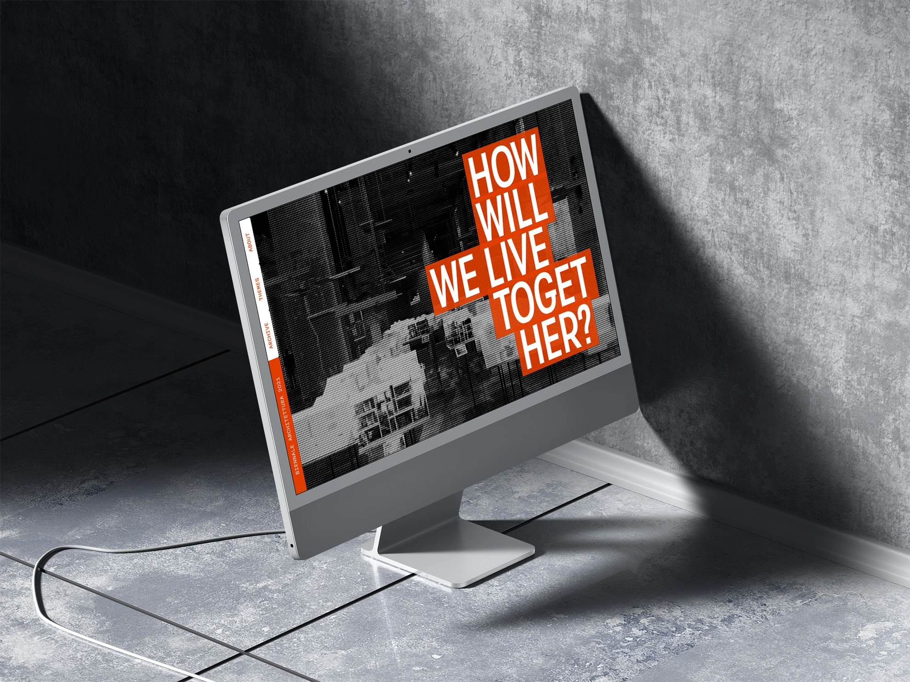
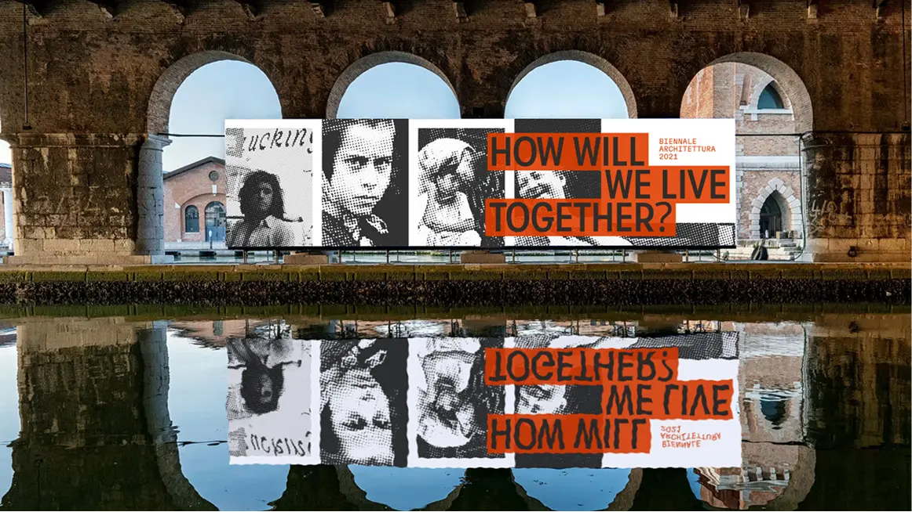
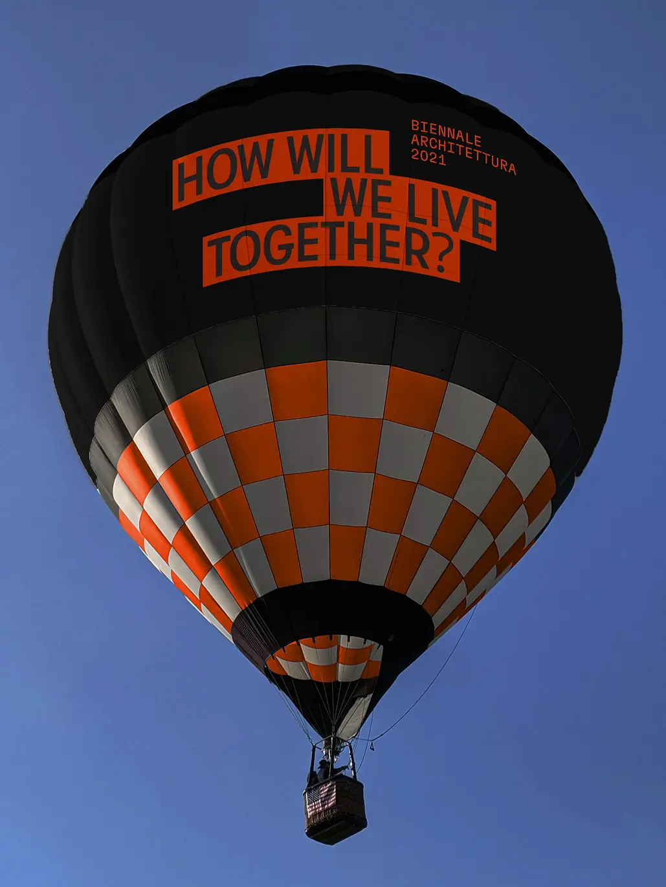
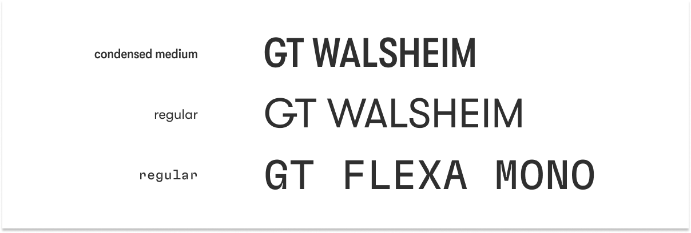
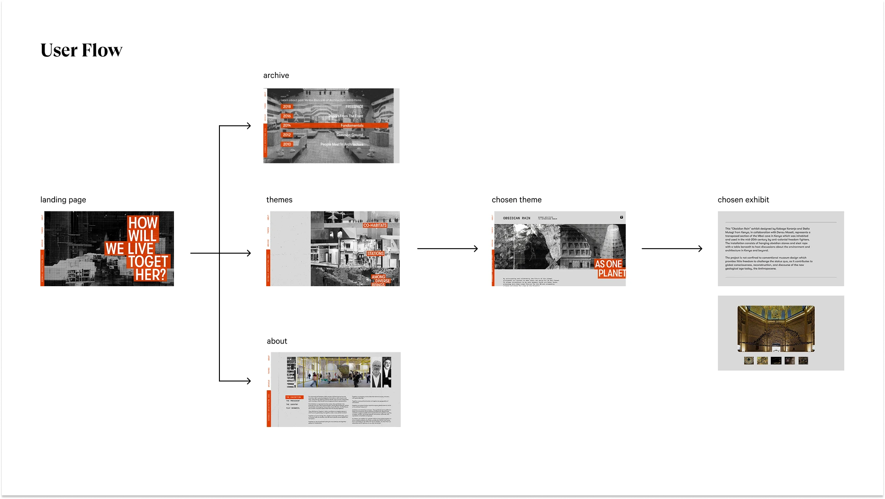
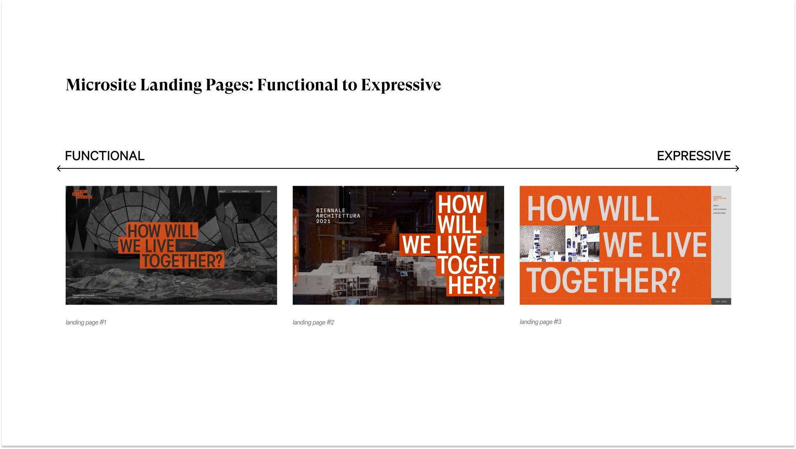
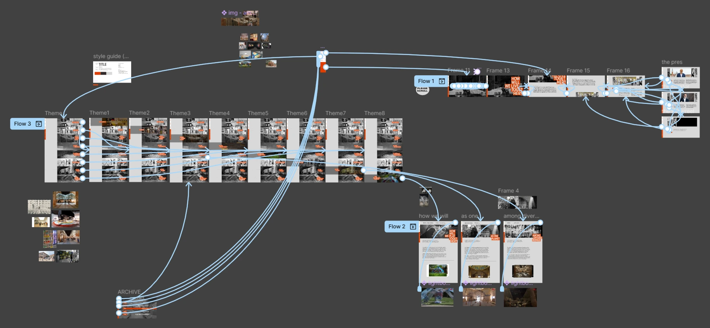

June 2024 (4 weeks)
Graphic Designer
Figma, Photoshop
Colvin Wong, Kirsten Lee, Lily Imus, Zainab Shakeel
Create a visual identity for the 17th Biennale Architettura Exhibition, followed by the design of a microsite prototype and two accompanying graphic assets.
Microsite mockup
Microsite walkthrough
Graphic asset 1 - Billboard
Graphic asset 2 - Hot air balloon
The monochromatic color palette consists of a red-orange hue, its shade, and two contrasting variations of gray. The vibrant red-orange draws attention without being as intense as red. It is also selected for its association with creativity and optimism, qualities that resonate with the exhibition's theme.
The primary font, GT Walsheim, features a symmetrical design that, when condensed, forms rectangular shapes that complement the design's geometric elements. GT Flexa Mono, naturally condensed and bold at a regular weight, ensures legibility, making it an ideal choice.
Monochromatic color palette
Typography
We began by exploring Ellen Lupton’s design principles and Chris Ashworth’s design qualities, selecting two principles and three qualities to guide our approach. We then curated and grouped images that aligned with these concepts, providing a visual reference for integrating them into our design process.
Creating spatial planes with graphic transparency
Misaligning text to break structure
Overlapping elements to develop narratives
Off-grid arrangement for visual weight
Placement of shapes to create tension
Image Grouping Process Screenshot
We established three lines of investigation by pairing one design principle with one quality. For each, we created multiple poster variations, exploring different typefaces, color schemes, and image treatments. The final poster designs would define our art direction.
Placement of shapes and misaligned text
Off-grid arrangement and misaligned text
Overlapping elements and misaligned text
Other poster iterations not chosen
Once the posters were finalized, we explored how each line translated into graphic assets, testing their effectiveness and visual cohesion.
Graphic assets for three lines of investigation
After finalizing our art direction, we began developing the microsite prototype. Working in smaller teams, we focused on content planning, visual design and interaction design.
User Flow Planning
Landing page design options from functional to expressive.
Prototyping by the interaction design team
The four-week time constraint posed a challenge for our team, as we balanced different schedules, coursework, and part-time jobs. To navigate this, we established clear role delegations while remaining flexible in supporting other roles. Adopting an agile approach, we ran planning, design, and prototyping phases in parallel, ensuring timely project completion.
This project allowed me to familiarize myself with Figma, apply various design principles, and refine my work through image treatment, font pairings, and layout design. It also deepened my understanding of design thinking methodologies and enhanced my ability to collaborate effectively with a team under tight deadlines.